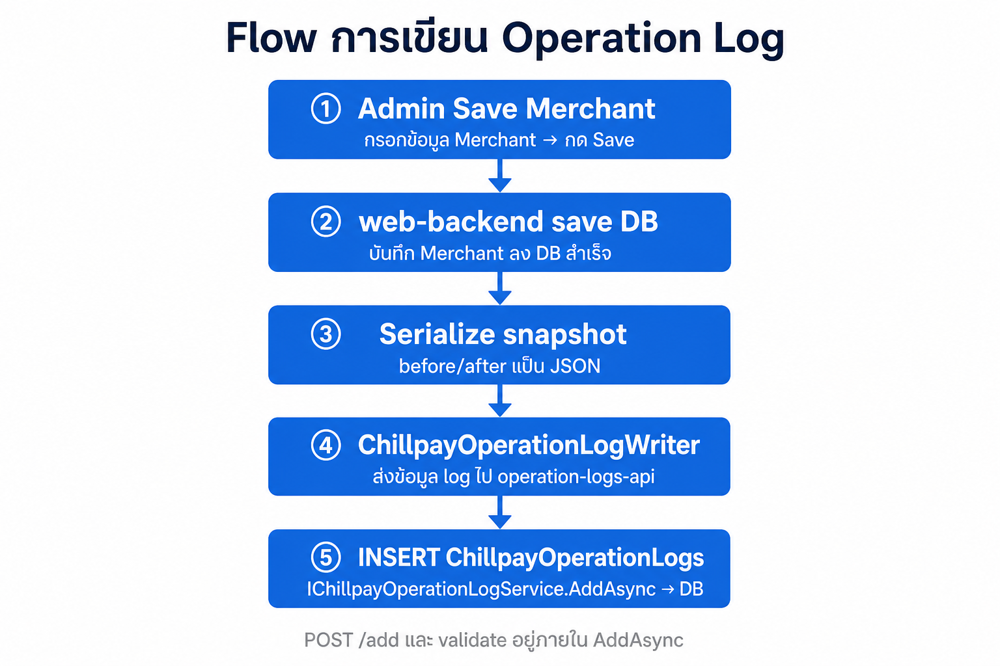
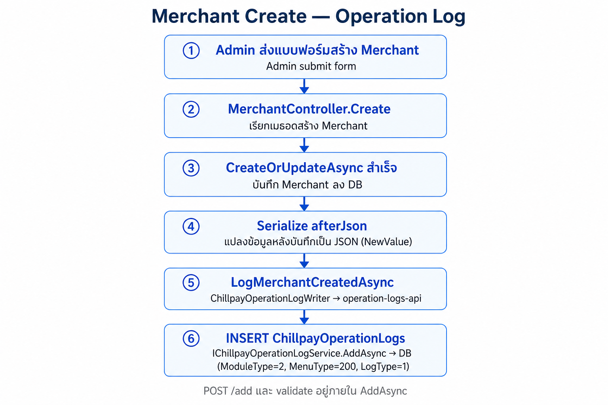
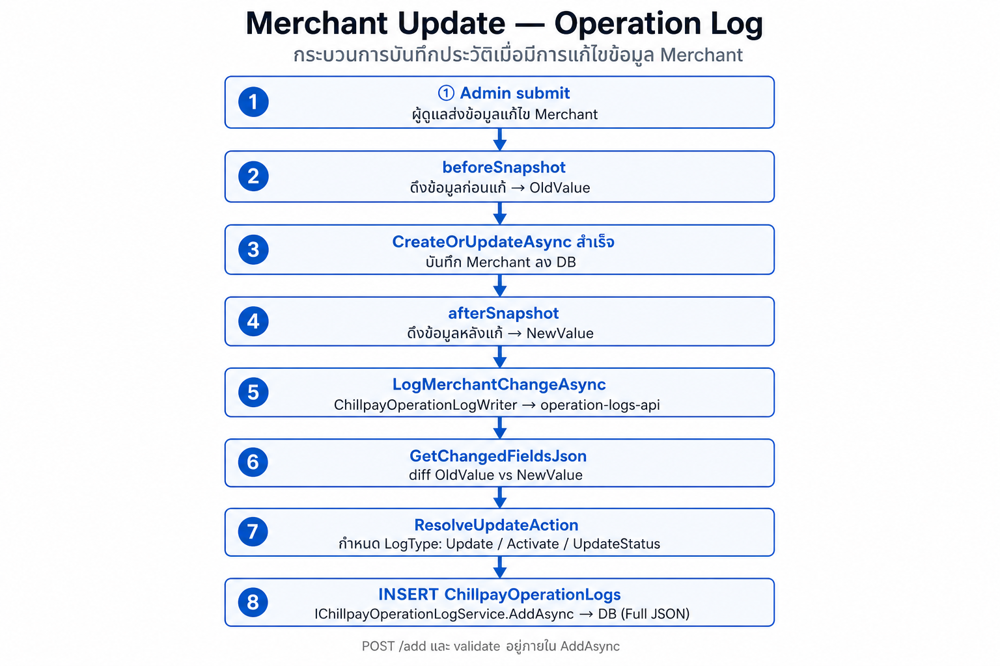

อธิบาย Registry — ModuleType, MenuType, LogType
ภาพรวม 3 ชั้น
ModuleType (1–14) ← หมวดใหญ่ = sidebar Admin (Merchant, Settings, …)
└── MenuType ← หน้าย่อยที่เขียน log ได้ (Fee, Route, Payment Channel, …)
└── LogType ← action ที่เกิดขึ้น (Create, Update, Delete, …)
└── DataId + MerchantId ← id record + ร้าน (Module Merchant)
ทำไมแยก 3 ชั้น?
| ชั้น | ตอบคำถาม | ตัวอย่าง |
|---|---|---|
| ModuleType | log นี้อยู่ หมวดไหน ของ Admin? | 2 = Merchant |
| MenuType | log นี้มาจาก หน้า/เมนูไหน? | 202 = Merchant Fee |
| LogType | ทำอะไร กับ record นั้น? | 2 = Update |
แยกจาก PayOut ที่ใช้ LogType เป็นช่วงเลขแทน Menu — แบบ Chillpay map กับ sidebar Admin ได้ตรง
ModuleType — หมวดใหญ่ (1–14)
ModuleType = ลำดับ module ตาม sidebar Web Admin — กำหนดใน enum ChillpayOperationLogModuleType (OperationLogConstants.cs)
public enum ChillpayOperationLogModuleType
{
User = 1,
Merchant = 2,
Settings = 3,
Transactions = 4,
Settlements = 5,
ManageTransaction = 6,
PayLink = 7,
Fraud = 8,
Etax = 9,
OddService = 10,
ChillAppPartner = 11,
Wallet = 12,
Recurring = 13,
Commission = 14,
}
บนหน้า List: dropdown Module — เลือกหมวดเดียว หรือ Select All (ค้นทุก module ที่เปิดใช้)
MenuType — เมนูย่อยที่เขียน log ได้
MenuType = หน้า Admin ที่มี operation log (create / update / delete ฯลฯ) — กำหนดใน enum ChillpayOperationLogMenuType (OperationLogConstants.cs)
public enum ChillpayOperationLogMenuType
{
// Module 1 — User
Account = 101,
Role = 102,
// Module 2 — Merchant
Merchant = 200,
MerchantUser = 201,
MerchantFee = 202,
MerchantRoute = 203,
MerchantServiceFee = 204,
GenerateMerchantKeys = 205,
MerchantEmails = 206,
// Module 3 — Settings
PaymentChannel = 300,
PaymentRoute = 301,
PaymentRouteInquiry = 302,
CreditCardConfig = 303,
SwitchPaymentRouteChannel = 305,
ChillPayMaintenance = 306,
BankMaintenance = 307,
BankPaymentApiSetting = 308,
SMSRoute = 309,
ExchangeRate = 310,
ExchangeRateLog = 311,
// Module 4 — Transactions
Payment = 401,
Void = 402,
RefundOld = 403,
RefundTransaction = 404,
ApproveRefund = 405,
SettlementOld = 406,
PaymentSummaryOld = 407,
ImportMcc = 408,
InquiryTransaction = 409,
WarningTransaction = 410,
// Module 5 — Settlements
SettlementDashboard = 501,
Settlement = 502,
SettlementUploadFile = 503,
SettlementMerchantTransfer = 504,
SettlementMerchantSetting = 505,
SettlementStatus = 506,
DownloadPaymentSummary = 507,
// Module 6 — Manage Transaction
UpdateTransactionStatus = 601,
UpdateSettlementStatus = 602,
UpdateTransferDate = 603,
// Module 7 — PayLink
PayLinkLink = 701,
PayLinkTransaction = 702,
// Module 8 — Fraud
FraudCreditCardTransactions = 801,
FraudObserveConfiguration = 802,
FraudObserveTransactions = 803,
FraudAlertConfiguration = 804,
FraudAlertTransactions = 805,
// Module 9 — Etax
EtaxMerchantProfile = 901,
EtaxEndUserProfile = 902,
EtaxSaleManage = 903,
EtaxUploadSettlement = 904,
EtaxUpdateSettlement = 905,
EtaxSettlementPayOut = 906,
EtaxInvoiceMerchant = 907,
EtaxInvoiceEndUser = 908,
EtaxInvoiceTransactions = 909,
EtaxPnd = 910,
EtaxInvoiceAbbTransactions = 911,
EtaxOutstandingInvoice = 912,
EtaxCancelInvoice = 913,
EtaxCreditNote = 914,
EtaxDebitNote = 915,
EtaxCreditNoteInvAbb = 916,
// Module 10 — Odd Service
OddRoute = 1001,
OddMerchantRoute = 1002,
OddRegister = 1003,
OddBayConfigs = 1004,
OddBayCustomer = 1005,
OddScbConfigs = 1006,
OddScbCustomer = 1007,
OddKtbConfigs = 1008,
// Module 11 — Chill App Partner
ChillAppMembers = 1101,
ChillAppTransactions = 1102,
ChillAppPartners = 1103,
ChillAppPayTransactions = 1104,
ChillAppSettlementPayTransactions = 1105,
// Module 12 — Wallet
WalletMerchant = 1201,
WalletShopSendMoneyFee = 1202,
WalletTransaction = 1203,
WalletSettlementTransaction = 1204,
WalletSettlementReport = 1205,
WalletSettleVersion = 1206,
// Module 13 — Recurring
RecurringMerchant = 1301,
RecurringSchedule = 1302,
RecurringTransactions = 1303,
// Module 14 — Commission
CommissionReseller = 1401,
CommissionResellerPayout = 1402,
CommissionReports = 1403,
CommissionDownloadReports = 1404,
}
บนหน้า List: dropdown Menu — แสดงเมื่อเลือก Module แล้ว; Select All = ไม่ส่ง menuType (ได้ทุกเมนูใน module)
LogType — Action (ประเภทการกระทำ)
LogType = action กลาง ใช้ร่วมทุก module — ไม่ใช่ชื่อเมนู — กำหนดใน enum ChillpayOperationLogActionType (OperationLogConstants.cs)
public enum ChillpayOperationLogActionType
{
Create = 1,
Update = 2,
Activate = 3,
Inactivate = 4,
Delete = 5,
Generate = 7,
UpdateStatus = 8,
Approve = 9,
Reject = 10,
}
บนหน้า List: dropdown Log Type — filter ตาม action; รายการที่แสดงขึ้นกับ Menu ที่เลือก (แต่ละเมนูอนุญาต action ไม่เหมือนกัน เช่น Generate Keys มีแค่ action 7)
การตัดสิน LogType ตอน Update (Writer):
- Serialize
beforeSnapshot/afterSnapshotเต็ม GetChangedFieldsJson→ diff เฉพาะ field ที่เปลี่ยนChillpayMerchantOperationLogResolver.ResolveUpdateAction(menuType, diff)→ เลือก Update / Activate / UpdateStatus- บันทึก log ด้วย snapshot เต็มใน OldValue/NewValue
Merchant filter บนหน้า List: merchantId=[100] — ดึง log ทุกเมนูของร้านนั้น (ใช้ index IX_ChillpayOperationLogs_MerchantId · แบบเดียวกับ PayOut MerchantId.Contains)
Flow การเขียน Log
กฎ: บันทึก Operation Log ต่อเมื่อรายการนั้น success เท่านั้น — เรียก writer หลัง business action ผ่าน (เช่น CreateOrUpdateAsync คืน Succeeded)
| สถานการณ์ | เขียน Log? |
|---|---|
| Save / Create / Update / Delete ไม่สำเร็จ | ไม่ |
| Business action สำเร็จ | ใช่ — เรียก LogMerchantCreatedAsync, LogMerchantChangeAsync ฯลฯ |
| Business สำเร็จ แต่เรียก operation-logs-api ไม่ผ่าน | business ยัง success — log อาจไม่เข้า DB |

ขั้น
POST /addและ validate เกิดภายในChillpayOperationLogService.AddAsync— ไม่แยกเป็น step ใน flow
- LogAudit แยกต่างหาก — เก็บเฉพาะ field ที่เปลี่ยน
ไฟล์หลัก
| Repo | บทบาท | ไฟล์ |
|---|---|---|
| web-backend | Controller | MerchantController.cs — เรียก log หลัง save |
| web-backend | Helper | BaseController.cs — LogMerchantCreatedAsync, LogMerchantChangeAsync |
| web-backend | Writer | ChillpayOperationLogWriter.cs — WriteMerchantLogAsync → operation-logs-api |
| operation-logs-api | Service | IChillpayOperationLogService / ChillpayOperationLogService.cs — AddAsync (validate + INSERT) |
หมายเหตุ:
ChillpayOperationLogWriter(web-backend) เรียก API ·ChillpayOperationLogService(operation-logs-api) รับ request แล้ว validate + บันทึกลง DB
ตัวอย่าง — Merchant Create
หน้า: Merchant Create → กด Save (เฉพาะเมื่อ CreateOrUpdateAsync success)

ขั้น
POST /addและ validate เกิดภายในChillpayOperationLogService.AddAsync— ไม่แยกเป็น step ใน flow
record ในตาราง ChillpayOperationLogs (ตัวอย่าง merchant id 100)
| คอลัมน์ | ค่า |
|---|---|
| ModuleType | 2 (Merchant) |
| MenuType | 200 (Merchant) |
| LogType | 1 (Create) |
| DataId | 100 |
| MerchantId | 100 |
| OldValue | null |
| NewValue | JSON snapshot merchant ทั้งก้อนหลังสร้าง |
| Message | Merchant created |
| RequestSystem | Admin |
| RequestBy | user id ผู้สร้าง |
ตัวอย่าง — Merchant Update
หน้า: Merchant Update → แก้ข้อมูล → กด Save (เฉพาะเมื่อ CreateOrUpdateAsync success)

ขั้น
POST /addและ validate เกิดภายในChillpayOperationLogService.AddAsync— ไม่แยกเป็น step ใน flow
record ในตาราง (ตัวอย่าง แก้ CompanyName ของ merchant 100)
| คอลัมน์ | ค่า |
|---|---|
| ModuleType | 2 |
| MenuType | 200 |
| LogType | 2 (Update) — หรือ 3/8 ถ้า resolver เห็นว่าเปลี่ยนแค่ status |
| DataId | 100 |
| MerchantId | 100 |
| OldValue | JSON snapshot merchant ก่อนแก้ |
| NewValue | JSON snapshot merchant หลังแก้ |
| Message | Merchant updated |
| RequestSystem | Admin |
อ่าน log กลับ: หน้า List filter Module=Merchant, Merchant=100
ตัวอย่าง record — Merchant Fee Update
แก้ Merchant Fee id 501 ของ merchant 100:
| คอลัมน์ | ค่า |
|---|---|
| ModuleType | 2 |
| MenuType | 202 |
| LogType | 2 (Update) |
| DataId | 501 |
| MerchantId | 100 |
| OldValue | JSON snapshot เต็มก่อนแก้ |
| NewValue | JSON snapshot เต็มหลังแก้ |
| Message | Merchant fee updated |
| RequestSystem | Admin |
| RequestBy | user id |